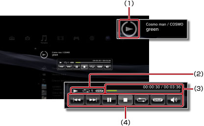

Музыка > Использование уменьшенной контрольной панели
Использование уменьшенной контрольной панели
Уменьшенная контрольная панель используется для выполнения разных действий при воспроизведении музыки.
1. |
Нажмите кнопку PS при воспроизведении музыки. |
||||||||
|---|---|---|---|---|---|---|---|---|---|
2. |
Кнопками направлений выберите пиктограмму воспроизводимого музыкального файла в меню 
|
Подсказки
- Пиктограмма воспроизводимого музыкального файла отображается под пиктограммой
 (Музыка).
(Музыка). - Чтобы скрыть уменьшенную контрольную панель, при воспроизведении музыки нажмите кнопку
 .
.
Назад

Переход к началу этой или предыдущей дорожки.
Далее
Переход к началу следующей дорожки.
Пауза
Приостановка воспроизведения.
Стоп
Остановка воспроизведения и скрытие уменьшенной контрольной панели.
Произвольное воспроизведение
Воспроизведение дорожек в случайной последовательности.
Повтор
Повторное воспроизведение дорожек. Можно выбрать один из трех режимов повторного воспроизведения (см. ниже), нажав кнопку  .
.
 |
Повторное воспроизведение одной дорожки. |
|---|---|
|
Повторное воспроизведение всех дорожек. |
| Не отображать | Очистка списка повторного воспроизведения и последовательное воспроизведение всех дорожек. |
Контроль громкости
Регулировка громкости воспроизведения дорожек в меню (Музыка). Можно выбрать один из девяти уровней.
Подсказка
При слишком высоком уровне громкости воспроизведение может быть прерывистым. В таком случае уменьшите уровень громкости.